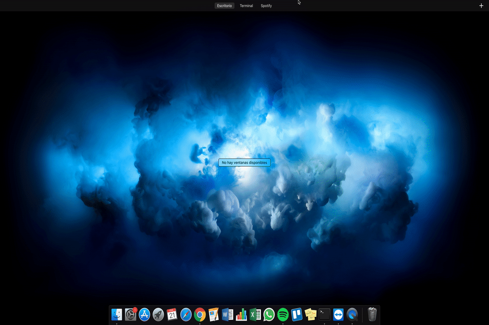

from sphinx.builders.html import StandaloneHTMLBuilder StandaloneHTMLBuilder.supported_image_types = [‘image/svg+xml’,’image/gif’,’image/png’,’image/jpg’]
Command line¶
In order to transfor .ORF to .JPG you must run:
python main.py /path/to/folder/with/ORFpictures/ /path/to/output/folder//
Example:
python main.py /Users/stephi/picturesORF/ /Users/stephi/output_folder/
GIF to use it!
